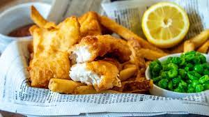

Fish and Chips Recipe

Description
Homemade English Fish and Chips in less than 10 minutes. want to do it yourself? countinue on reading!
Ingredients
- 2kg of fish
- 3 potato fries
- 1 onion
- spoon of olive oil
- 2 big lemons
- 2 spoons of salt
- 1 spoons of pepper
Steps
- put the potato in the oven on 180 degrees (celsius) for 10 minutes
- Cut the half of the onions to cubes and put in on a hot frying pan after putting one spoon of olive
- Wait for the onion to golden, then add the fish for 3 minutes
- Cut the onions and the lemons while waiting for the fish to cook
- Add 2 spoons of salt and 1 spoon of pepper
- Mix it all and wait 2 minutes
- viola! you got yourself a vintage Fish and Chips. Bon Apetit!